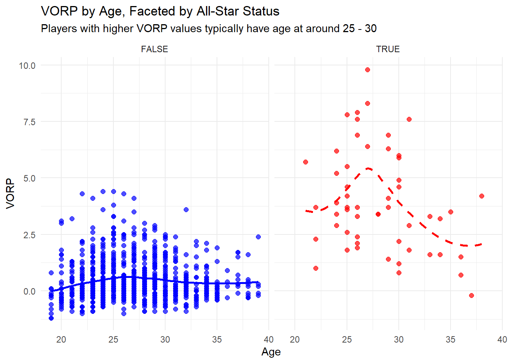
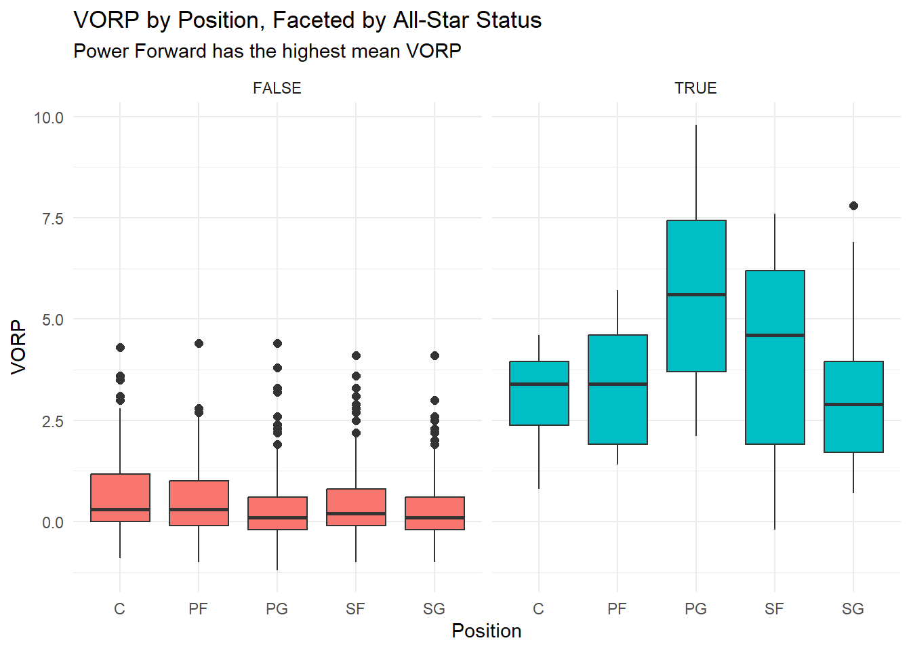

nba_0 <- nba_15_16 %>% dplyr::select(c('Pos', "Age", "Tm", "ALL_STAR", "VORP", "G"))
nba_0 <- nba_0 %>% filter(G > 20)Example Analysis
Introduction

Goal of This Project
The project aims to give an exploratory data analysis for the research question that what factors are associated with the performance of NBA players with respect to their Value over Replacement Players (VORP) and the All-Star status.
Intended Audience
The intended audience are anyone who enjoy watching NBA games!
Data
This data was taken from the Kaggle data set, NBA Season Statistics 1958 -2017 (Repository 2022).
I have manually taken a subset with Year 2014 -2016 and added a column indicating whether the player was an All-Star player.
Data Dictionary
| Variable | Description |
|---|---|
| Pos | Player’s Position (PG, SG, SF, PF, C) |
| Age | Age of the Player |
| Tm | Team of the Player |
| ALL_STAR | The All Star Status of the player |
| VORP | Player’s Value over Replacement Player statistics |
| G | Number of Games the Player Played |
What is the Value over Replacement Player and All-Star?
To understand the idea of Value over Replacement Player, I need to first introduce Box Plus Minus. Box Plus Minus is a basketball box score-based metric that estimates a basketball player’s contribution to the team when that player is on the court. It takes into account the player’s box score information (games played, field goal percentage, assists, rebound, etc), position, and the team’s overall performance to estimate the player’s contribution in points above the league average per 100 possessions played (Myers February 2020). The league average is defined as 0.0 and a value of +5.0 means the team is 5 points per 100 possessions better with the player on the floor than with average production from another player.
Value over Replacement Player converts the BPM rate into an estimate of each player’s overall contribution to the team, measured versus what a theoretical “replacement player” would provide (Cappe February 29, 2020). A replacement player is one with a performance at “replacement level,” the level of performance an average team can expect when trying to replace a player at a minimal cost. That is to say, the player is on the periphery of the league. By design, the player of the replacement level has a VORP of -2.0.

The National Basketball Association (NBA) All-Star Game is an annual exhibition basketball game featuring two teams of twelve composed of all of the top-ranked players from the Eastern and Western Conferences. The All-Star players are the ones being accepted to be the influential players in that season.
Data Cleaning
Excluding the unrepresentative data
Firstly, there are players that played few games during a season and therefore the reported VORP might not reflect their true performance on court. So, I exclude those players.
Tidying the Position Variable
Secondly, most of the values of ‘Pos’ variable in this data are either “C”, “PF”, “SF”, “SG”, or “PG”. However, some have a mix of the two, like “PG-SG”. But as they are a tiny part of the data, I will exclude them.
nba_1 <- nba_0 %>% filter(Pos %in% c('C', 'PF', 'SF', 'SG', 'PG'))
nba_pos_count <- nba_1 %>%
count(Pos, name = "Count") %>%
arrange(desc(Count))
ggplot(nba_pos_count, aes(x = reorder(Pos, Count), y = Count, fill = Pos)) +
geom_bar(stat = "identity") +
labs(
title = "Distribution of Player Positions",
subtitle = "Center position has the fewest players, while pointguard has the most",
x = "Player Position",
y = "Number of Players"
) +
theme_minimal() +
theme(legend.position = "none") +
geom_text(aes(label = Count), vjust = -0.5)
Why I drop rows?
Most of the values of ‘Pos’ variable in this data are either “C”, “PF”, “SF”, “SG”, or “PG”. However, some have a mix of the two, like “PG-SG”. But as they are a tiny part of the data, I will exclude them.
Collapsing the Team Variable
nba_basic <- nba_1 %>%
mutate(region = forcats::fct_collapse(Tm,
Pacific = c("LAL","GSW","LAC","PHO","SAC"),
Northwest = c("UTA","MIN","OKC","POR","DEN"),
Southwest = c("DAL","SAS","HOU","NOP","MEM"),
Central = c("DET","CLE","MIL","CHI","IND"),
Southeast = c("MIA","WAS","CHO","ORL","ATL"),
Atlantic = c("NYK","TOR","BOS","PHI","BRK"))) %>%
dplyr::select(-Tm)
nba_basic$region <- as.factor(nba_basic$region)
nba_region_count <- nba_basic %>%
count(region, name = "Count") %>%
arrange(desc(Count))
ggplot(nba_region_count, aes(x = reorder(region, Count), y = Count, fill = region)) +
geom_bar(stat = "identity") +
labs(
title = "Distribution of Player From Different Regions",
subtitle = "TOT represents the players played for more than one team that season (being traded).",
x = "Region",
y = "Number of Players"
) +
theme_minimal() +
theme(legend.position = "none") +
geom_text(aes(label = Count), vjust = -0.5)
Why I collapse variables?
I collapse the team variable into region, indicating which division the team is in.
Exploratory Data Analysis
ggplot(nba_basic, aes(x = ALL_STAR, fill = Pos)) +
geom_bar(position = 'fill') +
labs(
x = "All Star",
y = "Proportion",
title = "Proportion of Players by Position in All-Star Games",
subtitle = "The proportion of All-Star players between all positions is quite even",
fill = "Position"
) +
scale_y_continuous(labels = percent_format()) +
theme_minimal()
ggplot(nba_basic, aes(x = ALL_STAR, fill = region)) +
geom_bar(position = 'fill') +
labs(
x = "All Star",
y = "Proportion",
title = "Proportion of Players by Region in All-Star Games",
subtitle = "TOT represents the players played for more than one team that season (being traded).",
fill = "Position"
) +
scale_y_continuous(labels = percent_format()) +
theme_minimal()
It shows that there were more players selected to be All-Star in the Southeast and the Pacific divisions. TOT represents that the player played for more than one team that season (being traded), and no such player was selected to be All-Star.
The Outcome, VORP
ggplot(data = nba_basic, aes(x = Age, y = VORP)) +
facet_wrap(~ ALL_STAR, ncol = 2) +
geom_point(aes(color = ALL_STAR), size = 2, alpha = 0.7) +
geom_smooth(aes(linetype = ALL_STAR, color = ALL_STAR), se = FALSE, method = "loess") +
labs(
title = "VORP by Age, Faceted by All-Star Status",
subtitle = "Players with higher VORP values typically have age at around 25 - 30",
x = "Age", y = "VORP",
color = "All-Star Status",
linetype = "All-Star Status"
) +
scale_color_manual(values = c("blue", "red")) +
theme_minimal() +
theme(legend.position = "none") +
scale_linetype_manual(values = c("solid", "dashed"))`geom_smooth()` using formula = 'y ~ x'
ggplot(nba_basic,aes (x=Pos,y=VORP,fill=ALL_STAR)) +
facet_wrap(~ ALL_STAR) +
geom_boxplot(outlier.size = 2) +
labs(title = "VORP by Position, Faceted by All-Star Status",
subtitle = "Power Forward has the highest mean VORP",
x = "Position", y = "VORP")+
theme_minimal() +
theme(legend.position = "none")
The boxplots show the VORP of players that play different positions.
Summary
This exploratory data analysis gives a preview about the distribution NBA players’ position, the division they’re in, and how their performances (evaluated by the VORP statistics and all-star status) may be associated with certain factors. From the plots, we see that there were more players selected to be All-Star in the Southeast and the Pacific divisions, meaning that these two divisions were likely to be more competitive than the others. Also, none of the players that were being traded were selected to be All-Star, since good players are less likely to be traded.
The scatter plot shows that the age might affect the VORP statistics, and players with higher VORP values typically have age at around 25 - 30. The boxplot shows the All-Star players have significantly higher VORP values for all five positions.
With these observations, machine learning models can be fitted to the data to draw more in-depth conclusions.
Functions Used
- dplyr and tidyr:
select,filter,mutate,count,arrange. - ggplot2:
geom_bar,geom_boxplot,geom_line,geom_point,facet_wrap
References
Cappe. February 29, 2020. “Learn a Stat: Box Plus Minus and VORP.” Hack a Stat.
Myers, Daniel. February 2020. “About Box Plus/Minus (BPM).”
Repository, UCI Machine Learning. 2022. “NBA Season Statistics 1958 -2017 Data Set.” https://www.kaggle.com/datasets/tanamwololo/nba-season-statistics-1958-2017.